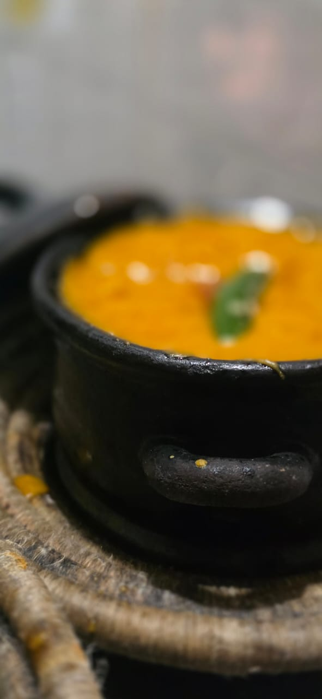

Featured Dishes

The Buja Special
Our signature Ethiopian platter.
25,000 RWF
Kitfo
Freshly prepared traditional Kitfo.
14,000 RWF
Awazey Tibs
Spiced beef served sizzling hot.
12,500 RWF
Zilzil Tibs
Tender strips of beef with vegetables.
14,500 RWF
Doro Wot
Ethiopia's most famous chicken stew.
12,500 RWF
Shiro Tegabino
Rich roasted chickpea stew.
11,000 RWF